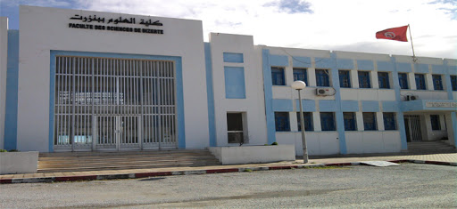
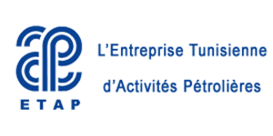
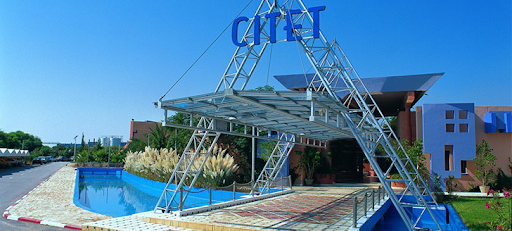

Formation

Mastère professionelle en chimie industriel
Faculté De sciences de Bizerte
FSB
Licence appliquée en chimie industrielle
Faculté De sciences de Bizerte
FSB
Experience Professionnelle
PROMOSCIENCES
Ingénieur technico-commercialTâches réalisées :
- Chargé par les équipements des laboratoires de prothèse dentaire
SGBIA
Technicien Contrôle QualitéTâches réalisées:
- Analyse physicochimique des matières premières
- Contrôle Qualité des boissons Gazeuse
La Sirène
Techno-CommercialTâches réalisées :
- Suivi des Commandes
- Contrôle Qualité
- Livraison des Commandes
Stage

Stage de 6 Mois au sein de laboratoire de L’ ETAP "Entreprise des Activités Pétrolières"
Détermination de l’origine et la distance de migration hydrocarbures de región de Cap-Bon en utilisant les paramètres moléculaires des hydrocarbures saturées, aromatiques et des résines
Stage de 6 Mois au sein de laboratoire de L’ ETAP "Entreprise des Activités Pétrolières"
Détermination de l’origine et la distance de migration hydrocarbures de región de Cap-Bon en utilisant les paramètres moléculaires des hydrocarbures saturées, aromatiques et des résines

Stage de 5 Mois au sein de laboratoire de CITET "Centre International des Technologies et d’Environnement de Tunisie"
Traitement des eaux usées de la station d’épuration de Korba et leur rendement épurative, les analyses sont effectuées au sein des laboratoires de CITET
Stage de 5 Mois au sein de laboratoire de CITET "Centre International des Technologies et d’Environnement de Tunisie"
Traitement des eaux usées de la station d’épuration de Korba et leur rendement épurative, les analyses sont effectuées au sein des laboratoires de CITET
Compétence
- Microsoft Office
- Matlab
- ISO 17025 / ISO 9001
- Hy sis
- Arabe: Langue Maternelle
- Français : Courant
- Anglais : Intermédiaire
Contact
Écrit par tarhounifrajMornag Ben arous 2090
numéro de télephone 23815960